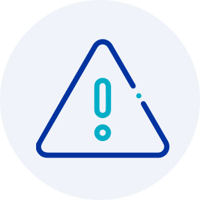
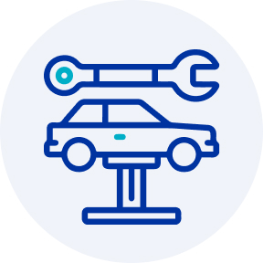
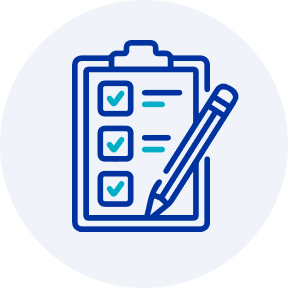
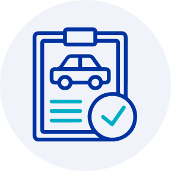
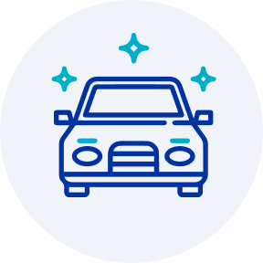

¿Cuál es la diferencia entre un siniestro y asistencia?
Sabemos que despues de un accidente, sea leve o grave, es posible que nuestras emociones se encuentren demasiado alteradas para pensar con claridad. Por eso, acá te explicamos lo que necesitas hacer para que estés informado en el caso que algún dia te suceda, y una de las primeras cosas que debes hacer es identificar si tu evento se clasifica como Asistencia o Siniestro.
Siniestro
Es un hecho que supone daño a una persona o a un bien material. Estos
eventos imprevistos están declarados en la póliza y son por los que responde Seguros
SURA.
Ejemplos :
- Choque automovilístico
- Incendio del hogar
- Fallecimiento de una persona
Asistencia
Son beneficios adicionales que ofrece Seguros SURA como ayuda,
a pesar de que no exista un siniestro.
Ejemplos:
- Servicio de grúa
- Servicio de cerrajería, plomería y electricidad
- Localización de maletas
¿Tuviste un siniestro? ¡Te ayudamos!
Una vez ocurrido el siniestro, debes anotar la mayor cantidad de datos que identifiquen a los involucrados y los hechos ocurridos (situación, robo, choque, etc). Luego debes realizar la denuncia online, disponible todos los días de la semana, las 24 horas del día.
Antecedentes
1.- Antecedentes
Recopila la mayor cantidad de antecedentes y fotos.
Denuncio

2.- Denuncio
Realiza la denuncia de tu siniestro a través de nuestros canales de atención
y llena el formulario con los datos requeridos.
Taller

3.- Taller
Revisa tu correo electrónico, recibirás un mail con los datos de tu
liquidador y taller. Al ingresar tu auto, recuerda dejar en la guantera el
Padrón, copia Licencia y una declaración jurada.
Evaluación

4.- Evaluación:
Espera el resultado de la inspección y cobertura.
Reparación

5. Reparación o Indemnización:
Recibe la determinación del caso, en la cual el liquidador se pondrá en
contacto para indemnizar al beneficiario o coordinar la reparación del
automóvil.
Entrega

6. Entrega
Solicita la fecha y hora de entrega de tu automóvil.
Datos
1.- Datos
Ingresa al formulario de siniestros y rellena con tus datos e información.
Inspeccion
2.- Inspección
Coordina la inspección del inmueble con tu liquidador asignado.
Evaluación
4.- Evaluación:
Espera el resultado de la inspección y cobertura.
Reparación

5. Reparación o Indemnización:
Recibe la determinación del caso, en la cual el liquidador se pondrá en
contacto para indemnizar al beneficiario o coordinar la reparación del
inmueble.